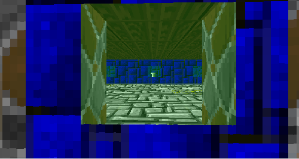
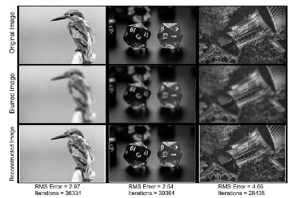
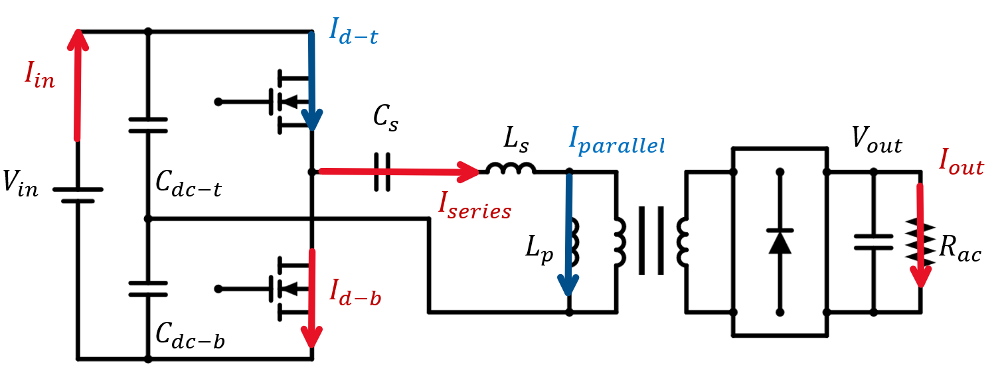
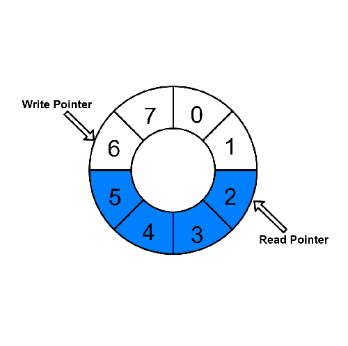
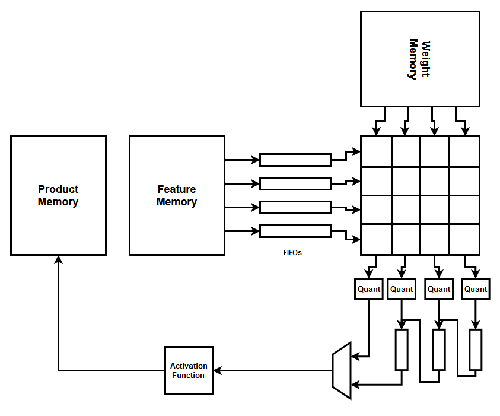

Hello, I'm Nick! I graduated with a degree in Electrical and Computer engineering and completed a Masters doing Parameter Estimation on a Solid State Transformer Model. My engineering adventure started in late middle school where I taught myself Java. Admittedly, my interests were purely video games and I did finally get to make some using what I learned! My curiosity soon pulled me into computer architecture after I started to wonder what really happens after all this code I wrote got compiled. My interests in hardware kept growing leading me to pursue Electrical and Computer Engineering and pick up a minor in Physics as a parallel interest. Every engineering class introduced a new lens to understand problems and new techniques to solve them. Despite my initial intent on not taking any power related classes, I fell right into the field with an amazing professor in all things power. Later, my professor became my advisor on my thesis! I moved into the workforce doing R&D to create adaptive devices or research cornerstone care issues commonly levied on those with disabilities and the care providers who directly support them. I’ve found research to be a rewarding path and would like to continue with the same curiosity that started me down this road.
Green, N. and Agamy, M. (2025), A Framework for Online Estimation of High Frequency Converter Circuit Parameters. Electron. Lett., 61: e70230.https://doi.org/10.1049/ell2.70230
N. Green and M. Agamy, "Neural Network Based Parameter Identification for LLC Resonant Converters," IECON 2024 - 50th Annual Conference of the IEEE Industrial Electronics Society, Chicago, IL, USA, 2024, pp. 1-6.https://doi.org/10.1109/IECON55916.2024.10905696
Green, Nicholas, "Neural Network Based Digital Twin For A Half-Bridge LLC Resonant Converter" (2024). Legacy Theses & Dissertations (2009 - 2024). 3319.https://doi.org/10.54014/8PW8-Z3G6

Recreation of an old graphics technique for pseudo-3D rendering written in C
2.5D Raycasting Graphics Engine

Using Bayesian statistics and MCMC techniques to deblur an image with a known blur kernel
Bayesian Deblurring Algorithm

Using Neural Networks to try and estimate difficult parameters (switch capacitances) of a Solid State Transformer using easily accessed measurements on the converter
Parameter Estimation on a Solid State Transformer

How can data be reliably communicated across clock domains? This project goes into the explanation and design of how with an Asynchronous FIFO buffer
Asynchronous FIFO and Metastability

Tiny project on a fast digital design for multiply matrices
Systolic Array Model